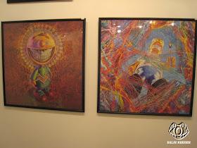

Exhibitions
Bipolar Surrealism, Opera Gallery, New York, New York, US, May 24–June 11, 2001.
Literature
Ron English, Abject Expressionism: The Art of Ron English (San Francisco: Last Gasp, 2007), p. 106. ISBN 978-0867196894.
Ron English, Original Grin: The Art of Ron English (Paris: Cernunnos, 2019), p. 328. ISBN 978-2374950938.
Roger Gastman, comp., Morning Wood (Berkeley: Gingko Press, 2003), p. 263. ISBN 978-1584231592.
Ancillary Documentation
The following material documents the composition as a print in exhibition photographs from Popaganda in Japan.


